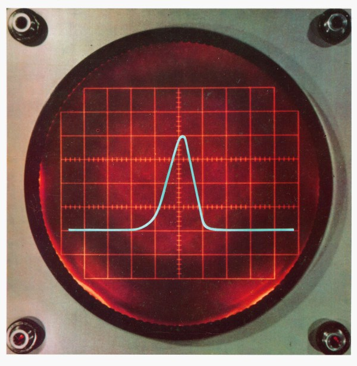
| Page No. | |
| The Concept | 3 |
| The Facility | 5 |
| The Reactor | 7 |
| Exposure Locations and Performance Levels | 11 |
| APRF User Support Facilities | 17 |
| Instructions to Potential Users | 20 |
| Table I. | |
| APRFR Core Design Data | 8 |
| Table II. | |
| Typical APRFR Performance Levels | 8 |
| Table III. | |
| APRFR Fluence and Flux Data | 13 |
| Table IV. | |
| Nominal APRFR Leakage and U235 Fission Spectra | 13 |
| Table V. | |
| Fluence-to-Dose Conversion Factors for APRFR Leakage Neutrons | 14 |
| Table VI. | |
| Kerma and Kerma Rate in Tissue for APRFR Exposure Conditions | 14 |
| Table VII. | |
| Kerma and Kerma Rate in Silicon for APRFR Exposure Conditions | 15 |
| Table VIII. | |
| Neutron-to-Gamma Dose Ratios | 15 |
| Table IX. | |
| APRF User Support Equipment | 18 |
Army Pulse Radiation Facility
U.S. Army Ballistic Research Laboratories
AMXRD-BTD
Aberdeen Proving Ground, Maryland 21005
Army Pulse Radiation Facility Location Map
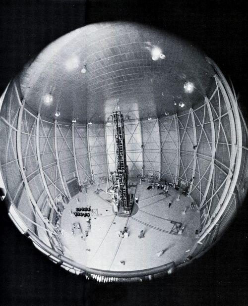
[Pg 3]
The Army Pulse Radiation Facility (APRF) is designed to meet an Army need for a facility located near the Eastern Seaboard capable of providing large fast neutron and gamma radiation doses within microseconds. This fast pulse radiation capability is necessary for the determination of transient responses of materiel in nuclear environments.
The APRF increases Army capability by providing improved simulation of radiative effects of a nuclear burst for studies of Army interest, and provides a facility for testing Army materiel. Because of its location, the APRF economically and efficiently serves the heavy concentration of Army agencies and contractors located along the Eastern Seaboard.
The design of the APRF is a direct outgrowth of projected user requirements. Thus the reactor can be used both for high dose irradiations of small objects, as a point source for radiation detector studies, and irradiation of bulk objects. The former requirement led to the incorporation of a 1½-inch OD “glory hole” running through the center of the core, and providing a fast neutron fluence of about 9 × 10¹⁴ neutrons per square centimeter per pulse. The latter two requirements have resulted in the design of a large volume, low-radiation backscatter Reactor Building. Provision is made for moving the reactor both within the Reactor Building and to an outdoor test site at heights variable up to 44 feet above ground by means of a mechanical device called the reactor transporter. The reactor is also capable of intermittent steady state operation in the kilowatt range for classes of experiments requiring this mode of operation. [Pg 4]
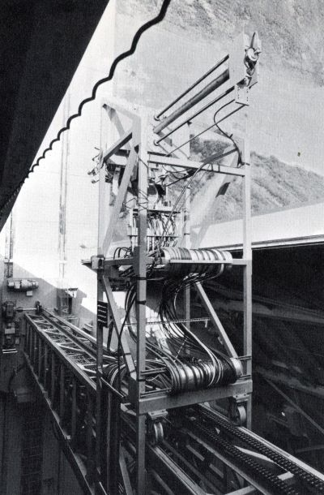
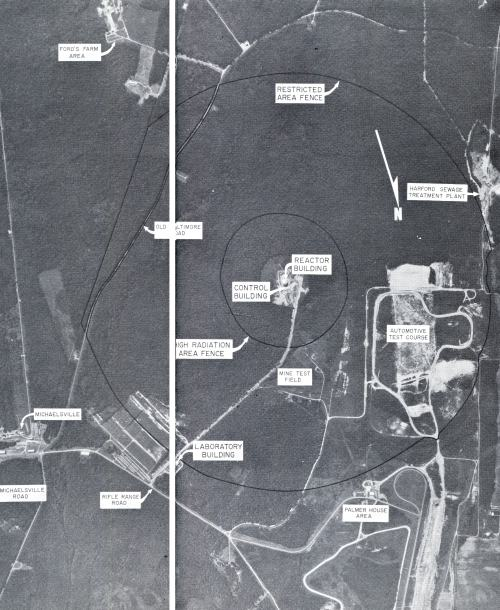
[Pg 5]
The APRF is located on the military reservation of Aberdeen Proving Ground (APG), in southeastern Harford County, Maryland. The Reactor Building is at the center of the facility.
This building is a windowless, circular structure with aluminum siding. Inside, the building is 100 feet in diameter and 65 feet high. There is a roll-up door in the south wall for the passage of the reactor transporter to the outdoor test site and another in the west wall for the access of vehicles to the building. A shielded stairway and maze provides access from the underground Control Building. This concrete structure provides radiological shielding for the personnel and controls associated with the operation of the reactor and the conduct of experiments.
The area within a ~450-yard radius of the Reactor Building constitutes the APRF high-radiation area defined by a 10-foot anti-personnel fence. This high-radiation area is in turn surrounded by a nearly concentric restricted area defined at its outer boundary by a barbed wire warning fence at a radius of ~1500 yards from the Reactor Building.
The Laboratory Building, located at the periphery of the restricted area, houses the administrative and support personnel for the APRF. Access to APRF is controlled at this point. [Pg 6]
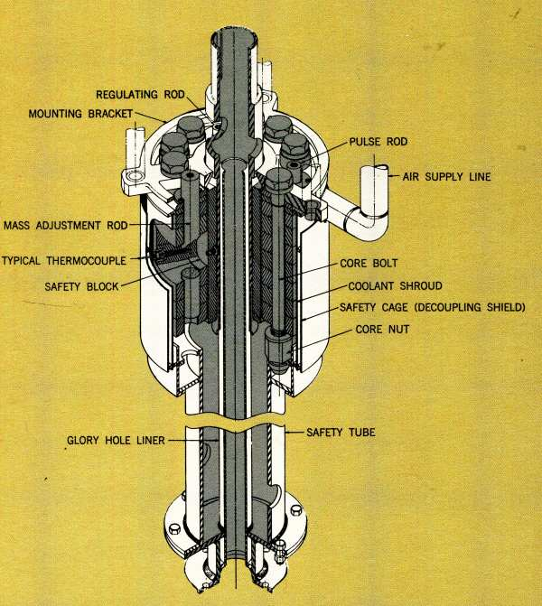
APRF Reactor Core Assembly
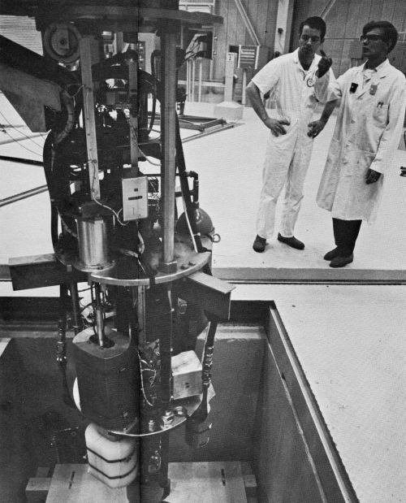
[Pg 7]
The reactor, (APRFR), is designed for both self-limited, super-prompt-critical pulse operation and steady state operation. The maximum available pulse has a yield of ~2.1 × 10¹⁷ fissions, while steady state operation is limited to about 10 kilowatts by the reactor core cooling system and activation of the core.
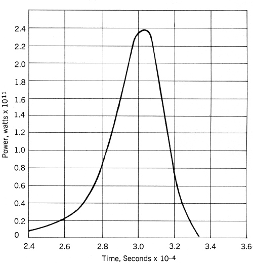
High Yield Prompt Pulse Shape
The APRFR is an advanced version of the Health Physics Research Reactor (HPRR) at Oak Ridge National Laboratory (ORNL), which has been operating since 1962. ORNL has played a key role in the design and testing of the APRFR. In pulse operation, the power level may rise on periods as short as 10 microseconds. Electro-mechanical scram systems are too slow to terminate such an excursion. Shutdown results from increased neutron leakage due to fuel expansion, resulting in a large prompt negative temperature coefficient of reactivity. This self-limiting feature depends almost entirely on the thermal expansion of the fuel alloy, and thus it is regarded as completely reliable and safe.
Following a pulse, additional reactor shutdown capability is provided by a safety block which, when ejected from the core, reduces the reactivity to about 20 dollars below delayed-critical. At lower yield pulses, below about 6 × 10¹⁶ fissions, the safety block is ejected by [Pg 8] the electro-mechanical scram system in about 0.1 seconds after a pulse. At higher yield pulses, the safety block is ejected in much shorter times due to thermo-mechanical shock forces which cause the safety block to bounce out. The large shutdown margin provided by the safety block is also the primary design device for preventing accidental criticalities during periods of reactor shutdown.
The APRFR core is an unmoderated cylindrical assembly containing about 125 kilograms of an alloy of uranium 235 containing 10% molybdenum. The actual core mass varies with the experiment. The core is cylindrical and consists of two concentric annuli: a fixed outer shell of stacked fuel discs bolted together with nine fuel bolts and Inconel nuts and a movable inner safety block, also of fuel alloy. The 1½-inch OD “glory hole” runs vertically through the center of the safety block. Key reactor data is summarized in Tables I and II. The APRFR has been operated during tests at ORNL at more than twice its design yield.
APRFR Core Design Data
| Core Diameter | 8.90 inches |
| Core Height[1] | 8.0 inches |
| Fuel Alloy | 90 wt % uranium - |
| 10 wt % molybdenum | |
| Uranium-235 Enrichment | 93.14% |
| Total Fuel Mass[2] | 125 |
| Safety Block Mass | 15.7 kg |
| Safety Block Height | 8.06 inches |
| Safety Block Diameter | 4.00 inches |
| Glory Hole Diameter | 1.50 inches |
| Number of Control Rods | Three |
| Core Cooling | Forced Air |
| Number of Core Bolts | Nine |
| Safety Block Reactivity Worth | ~$20 |
| Pulse Rod Reactivity Worth | ~$1.15 |
| Core Environment During Pulse | Dry Nitrogen |
| Core Cooling | Forced Air |
Typical APRFR Performance Levels
| PULSE MODE | |
| Routine Yield | 1.5 × 10¹⁷ fissions/pulse |
| Reactivity Insertion | $1.10 |
| Pulse Half-Width | 48 μsec |
| Initial Prompt Period | 18 μsec |
| Maximum Fuel Temperature Rise | 400°C |
| Temperature Coefficient | -0.3 cents/°C |
| Maximum Available Yield | ~2.1 × 10¹⁷ fissions/pulse |
| STEADY STATE MODE | |
| Continuous Operation | ~1 kw |
| Intermittent Operation | ~10 kw |
Steady state power levels are limited by effectiveness of core cooling system and core activation. [Pg 9]
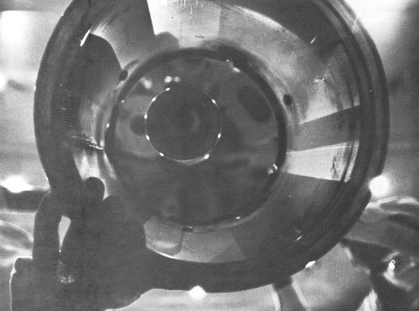
[Pg 10]
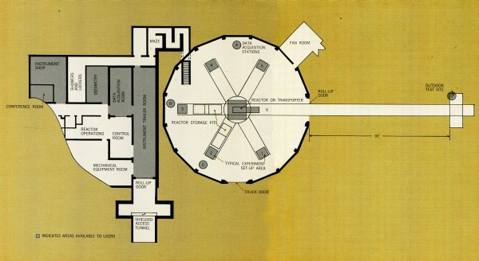
APRF Floor Plan
[Pg 11]
The highest fluence and dose rates are available in the 1½-inch glory hole. Since the reactor is supported from above by the transporter, the areas around and below the core are also available for experiments.
The core can be positioned by remote control anywhere within the range of travel of the transporter. Vertical travel is limited to about 44 feet above the Reactor Building floor level. Horizontal travel is limited by the range of the rails on which the transporter travels. Six pairs of rails extend radially from a turntable in the center of the Reactor Building. These rails terminate within the Reactor Building, except for one pair which extends 90 feet outside the building to an outdoor test site. Each pair of rails defines one experimental location where semi-permanent equipment and shielding can be set up without tying up the entire reactor operation.
Fluence and flux data for three typical exposure locations are given in Table III. In the absence of reflecting material beyond 1 meter from core center (position P3), these values fall off essentially as
where R is the distance to core center. Other performance data are summarized in Tables IV through VIII. [Pg 12]
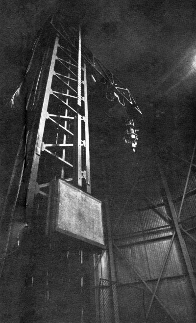
[Pg 13]
APRFR Fluence and Flux Data
| Routine Pulse Yield 1.5 × 10¹⁷ Fissions |
Maximum Pulse Yield 2.1 × 10¹⁷ Fissions |
|
|---|---|---|
| Fluence, n/cm² | ||
| P1[3] | 6.7 × 10¹⁴ | 9.3 × 10¹⁴ |
| P2 | 2.0 × 10¹⁴ | 2.8 × 10¹⁴ |
| P3 | 1.7 × 10¹² | 2.4 × 10¹² |
| Flux Density, n/cm²/sec | ||
| P1 | 1.4 × 10¹⁹ | 2.0 × 10¹⁹ |
| P2 | 4.3 × 10¹⁸ | 6.0 × 10¹⁸ |
| P3 | 3.7 × 10¹⁶ | 5.2 × 10¹⁶ |
Nominal APRFR Leakage and U235 Fission Spectra [4]
| Energy Group Number n |
Energy Range (Mev) |
Average Energy Eₙ (Mev) |
APRFR Spectrum Fraction XₙΔEₙ |
U235 Fission Spectrum Fraction XₙΔEₙ |
|---|---|---|---|---|
| 1 | 3.0-∞ | 4.41 | 0.133 | 0.204 |
| 2 | 1.4-3.0 | 2.10 | 0.251 | 0.344 |
| 3 | 0.9-1.4 | 1.14 | 0.164 | 0.168 |
| 4 | 0.4-0.9 | 0.65 | 0.262 | 0.180 |
| 5 | 0.1-0.4 | 0.26 | 0.168 | 0.090 |
| 6 | 0-0.1 | 0.059 | 0.022 | 0.014 |
| SUM | 1.000 | 1.000 | ||
| Mean | ||||
| Energy | ||||
| (Mev) | ~1.55 | ~1.8 | ||
[Pg 14]
Fluence-to-Dose Conversion Factors
for APRFR Leakage Neutrons
| Material | Quantity | Conversion Factor | |
|---|---|---|---|
| Tissue | Kerma | 2.4 × 10⁻⁷ | erg/gram |
| neutron/cm² | |||
| Tissue | Maximum Absorbed Dose For | 3.5 × 10⁻⁹ | rad |
| Normally Incident Neutrons | neutron/cm² | ||
| Silicon | Elastic Recoil Kerma | 2.7 × 10⁻⁹ | erg/gram |
| (~Permanent Effect) | neutron/cm² | ||
| Silicon | Ionization Kerma | 2.9 × 10⁻⁹ | erg/gram |
| (~Transient Effects) | neutron/cm² | ||
| Silicon | (Total) Kerma | 5.6 × 10⁻⁹ | erg/gram |
| neutron/cm² | |||
Kerma and Kerma Rate in Tissue
for APRFR Exposure Conditions
| Routine Pulse Yield 1.5 × 10¹⁷ Fissions |
Maximum Pulse Yield 2.1 × 10¹⁷ Fissions |
|
|---|---|---|
| Kerma in Tissue (ergs/gm) | ||
| P1[5] | 1.6 × 10⁸ | 2.2 × 10⁸ |
| P2 | 4.9 × 10⁷ | 6.8 × 10⁷ |
| P3 | 4.1 × 10⁵ | 5.7 × 10⁵ |
| Kerma Rate in Tissue (ergs/gm/sec) | ||
| P1 | 3.5 × 10¹² | 4.7 × 10¹² |
| P2 | 1.1 × 10¹² | 1.5 × 10¹² |
| P3 | 8.8 × 10⁹ | 1.2 × 10¹⁰ |
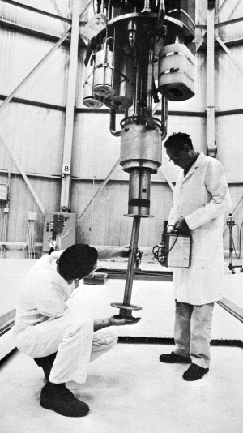
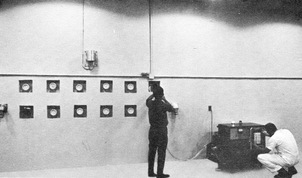
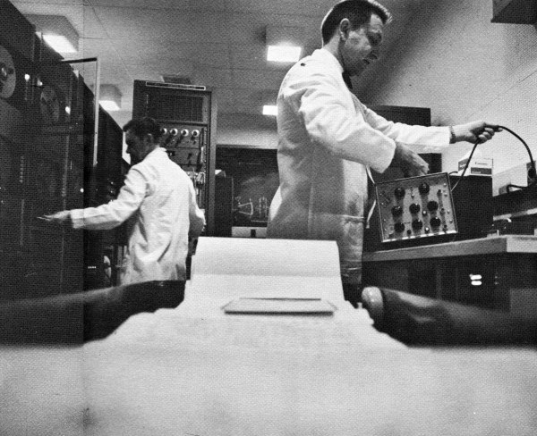
[Pg 15]
Kerma and Kerma Rate in Silicon
for APRFR Exposure Conditions
| Routine Pulse Yield 1.5 × 10¹⁷ Fissions |
Maximum Pulse Yield 2.1 × 10¹⁷ Fissions |
|
|---|---|---|
| Total Kerma in Silicon, ergs/gm[6] | ||
| P1[7] | 2.7 × 10⁶ | 5.2 × 10⁶ |
| P2 | 1.1 × 10⁶ | 1.6 × 10⁶ |
| P3 | 9.5 × 10³ | 13.3 × 10³ |
| Total Kerma Rate in Silicon, (ergs/gm/sec) | ||
| P1 | 5.8 × 10¹⁰ | 11.0 × 10¹⁰ |
| P2 | 2.4 × 10¹⁰ | 3.5 × 10¹⁰ |
| P3 | 2.0 × 10⁸ | 2.9 × 10⁸ |
Neutron-to-Gamma Dose Ratios [8]
| neutron rads tissue | n/cm²/sec | ||
|---|---|---|---|
| gamma rads tissue | gamma rads tissue | ||
| Core Center (P1) | 10 | 2.7 × 10⁹ | |
| Core Surface (P2) | 10 | 2.7 × 10⁹ | |
| 1 Meter from Core Center (P3) | 9 | 3.3 × 10⁹ | |
| 10 Meters from Core Center | 7 | 2.5 × 10⁷ | |
[Pg 16]
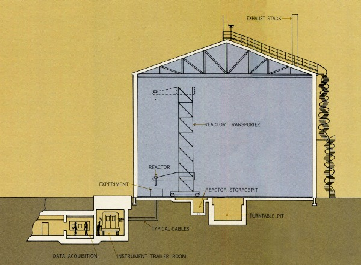
Cross Section of Reactor Building
[Pg 17]
APRF is designed and staffed to assist its users in all key areas relating to reactor utilization.
Physical Space Several areas in the underground Control Building are available to experimenters. These include the trailer tunnel with room for two full-sized trailers, the data acquisition room, and the instrument shop. All of these areas are provided with conduits so that cables can be run directly to them from the Reactor Building. In the trailer tunnel the minimum cable length required to run to the core surface is about 30 feet.
The exposure areas in the Reactor Building and the outdoor test site are equipped with conduits for communication and instrumentation cables.
Available areas in the Laboratory Building include a high-bay set up area, a machine shop, laboratory space, fume hood with remote manipulator, photography laboratory, and offices.
Data Acquisition and Processing The basic element here is the APRF Data Acquisition System described in Table IX. Various other instrumentation is available as summarized in Table IX. Data processing is available at the ARDC computer center and with on-line equipment at APRF.
Dosimetry Routine dosimetry is performed by APRF personnel. Methods available include fluence and spectrum measurements using foil techniques, glass rod microdosimetry, thermoluminescence, and diverse active dosimeters. Foils are analyzed using the APRF Automatic Dosimetry System and data are available within a short time following exposure.
Measurements are supplemented by analytical methods including one and two dimensional transport theory, Monte Carlo, and special foil analysis codes.
Staff The APRF staff is available to guide, plan and set up experiments at the reactor, perform dosimetry, and assist in data acquisition. APRF participation is determined on a case-by-case basis.
Health Physics Health physics survey, monitoring, decontamination and related services are available in conjunction with the BRL Health Physics Division.
[Pg 18]
APRF User Support Equipment
| Transient Data Recording System | |||
|---|---|---|---|
| TAPE RECORDERS: | Three each—14 track Honeywell Model 7600 | ||
| FREQUENCY: | DC to 80 kHz FM, 400 Hz to 700 kHz Direct | ||
| SIGNAL | Universal Strain gauge and thermocouple with | ||
| CONDITIONING: | 100 KC DC amplifiers | ||
| TIME CODE: | IRIG A, 1 millisecond resolution | ||
| PATCH PANELS: | Coaxial and triaxial connectors for all inputs | ||
| and outputs, insulated shields. | |||
| AUTO CALIBRATION: | 50 channel, 3 step | ||
| CHANNEL ID: | Automatic ID in binary code | ||
| PLAYBACK: | 12” oscillograph | ||
| Dosimetry | |||
| Basic Foil Calibration System | |||
| 5000 Curie Co-60 source | |||
| Automated Sulfur, Fission Foil and Gamma Well Counting System, | |||
| 100 Samples each per cycle | |||
| Eight channel active dosimeter system with digital read out and | |||
| computer analysis of neutron fluence and energy | |||
| Toshiba Glass Rod and Harshaw TLD Gamma System | |||
| Computer | |||
| 16 bit/16K memory with foreground/background operation. Automatic | |||
| acquisition and reduction of foil counting data on-line. On-line | |||
| monitoring of reactor power pulse with analysis of peak, half-width | |||
| and yield. On-line monitoring of active dosimeters with data reduction. | |||
| Real time/Fortran IV. | |||
| General Equipment | |||
| 3300 Nuclear Data Multiparameter Analyzer, 4096 channel with | |||
| magnetic tape; RIDL 400 Channel Pulse Height Analyzer. | |||
| Oscilloscopes, cameras, electronic calibration equipment. | |||
| Hood areas with manipulators, photographic laboratory, radiation | |||
| monitoring equipment and services, machine shop. | |||
[Pg 19]
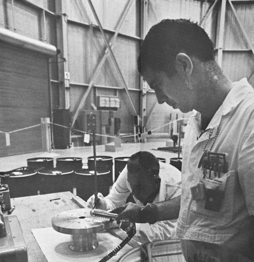
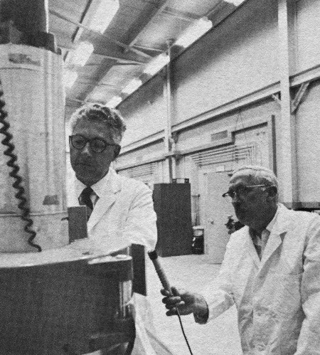
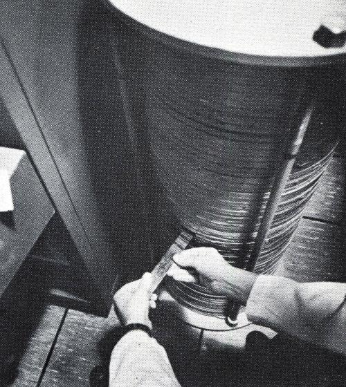
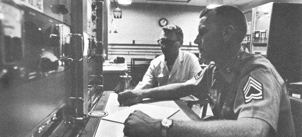
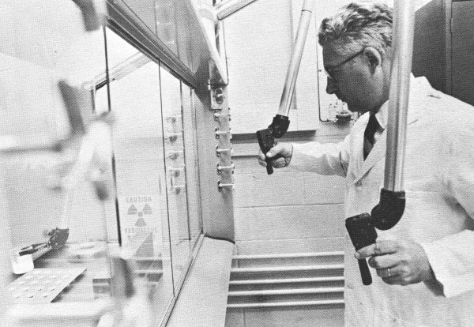
[Pg 20]
It is imperative to realize that there are stringent safety requirements connected with the use of the APRFR. All experiments will follow a written test plan approved at APRF. In order to perform an experiment with maximum usefulness and efficiency, it is essential that APRF be contacted during the early planning stages of a potential experiment. Failure to do this may result in erroneous experiment planning as regards safety and use of exposure space resulting in schedule delays, and possibly cancellation or drastic revision of the experiment.
For further information contact:
Commanding Officer
U.S. Army Ballistic Research Laboratories
ATTN: AMXRD-BTD, Facility Coordinator
Aberdeen Proving Ground, Maryland 21005
Footnotes:
[1] This value varies with experimental environment of core.
[2] This value varies with experimental environment of core.
[3] P1: Center of Glory Hole; P2: Core Surface (11.3 cm from Core Center); P3: 1 meter from Core Center.
[4] These values are approximate and meant for qualitative comparison only.
[5] P1: Center of Glory Hole; P2: Core Surface; P3: 1 Meter from Core Center.
[6] Ionization and elastic recoil processes contribute roughly equal amounts to the total kerma.
[7] P1: Center of Glory Hole; P2: Core Surface; P3: 1 Meter from Core Center.
[8] Representative data. Actual values influenced by core operating history.
Transcriber’s Notes:
The illustrations have been moved so that they do not break up paragraphs and so that they are next to the text they illustrate.
Typographical and punctuation errors have been silently corrected.